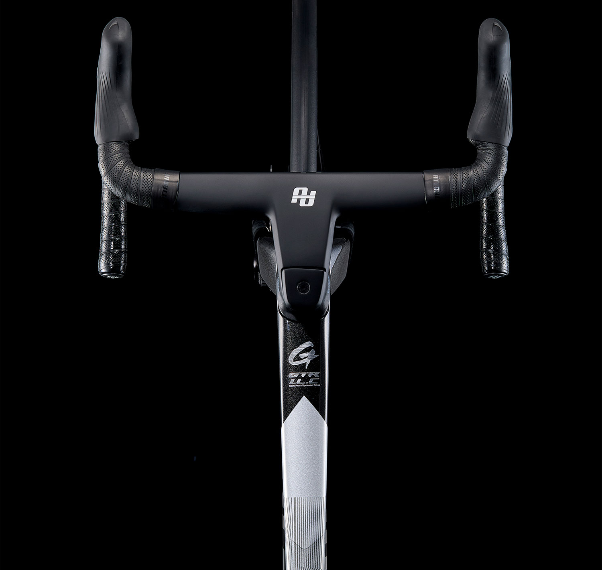

Choose your Gusto
Select an eligible bicycle through a participating dealer. They will explain the plan, application and deposit or contribution.
Independent service / Recur
A flexible route to a Gusto bicycle: make monthly payments over 24 months, then explore the options to keep, return or renew under your individual Recur agreement.
How it works
A dealer-led service
Your participating dealer supports selection, setup and ongoing care. Eligibility, approval and final options are governed by Recur’s current agreement terms.
Select an eligible bicycle through a participating dealer. They will explain the plan, application and deposit or contribution.
Ride for the agreed term and follow the servicing and condition requirements set out in your agreement.
At the end of the term, available options may include keeping, returning or renewing your bicycle.
Illustrative calculator
Adjust the figures to see a simple 24-month illustration. This is not a quotation or credit offer.
Any existing-bike contribution is subject to inspection, condition, service history and dealer confirmation.
Your illustration
Estimated monthly paymentCalculated as (bike price − contribution − illustrative future value) ÷ 24, rounded to the nearest pound. Future value is illustrated at 45% of bike price and is not guaranteed. Actual terms, eligibility and payments may differ.
Start with your dealer
Ask a participating Gusto dealer to explain availability, servicing requirements and the full agreement before proceeding.
Find a dealer↗